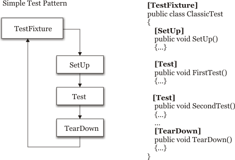

Unit testing is a great tool for ensuring an application quality and frameworks like NUnit [1] or csUnit [2] have made it very simple to implement. However, as the number of tests begins to grow, the need for more functionalities begin to show up. The above frameworks are based on the Simple Test Pattern which is basically the sequence of SetUp, Test, TearDown actions. Although highly generic, this solution lets a lot of work to be done by the test writer. Sadely, there is no easy way to derive and include a new "fixture" type in those frameworks.
Recently, Marc Clifton has proposed more that twenty unit test patterns in [3] that formalizes unit testing. In a perfect world, each of these pattern would have a "specialized" fixture: testing a collection should not require rewritting the test class for each collection instance, this is what I thought after reading Marc's article, the next thought was "let's do it".
While enjoying my stay in hospital for surgery, I spend the time writing a new generative test unit framework called GUnit. The objective of the framework is give the developers the "high order" test fixtures and the tools to build them, to build new custom fixtures without modifying the Core. GUnit already provides new fixture types, like the usefull TypeFixture which applies tests to a particular type instance. It must emphasize that GUnit is still a prototype, was written under the influence of morphine and other substance, and is published on the CodeProject to get constructive feedback, from CPians and specially from members of the AUT project.
In the following, it is assumed that the reader has basic knownledge of unit tests (NUnit, csUnit, JUnit)..
In this example, we show the motivation for GUnit and the key features about it. Exploring the example, we show what kind of data-structure and how the core will be built.
Let us consider the Simple Test Pattern which is
implemented by most test unit framework available. This is the classic way of
writing unit test as describe in the figure below. TestFixture tags
the class, one SetUp method, tests are done in the Test
tagged method and clean up is performed in TearDown tagged method.
This is illustrated in the left of the figure.
The figure already illustrates one of the key idea of GUnit: Fixture class should be definable at runtime by creating an execution pipe, using basic building blocks (SetUpAttribute, TestAttribute, etc...) provided by the framework.

In the above example, we call the TestFixture class a TestFixturePattern, SetUp and TearDown are NonTestPattern tags for mehods that are not considered as tests. Test is a TestPattern. A TestFixturePattern must be able to describe itself at runtime and return it's execution path.
As mentionned in the introduction, GUnit provides basic building blocks that developer can use to build more complex fixtures. For example, the Simple Test pattern is implemented as follows in GUnit (source first, comment below)
public class TestFixtureAttribute : TestFixturePatternAttribute
{
public override IRun GetRun()
{
SequenceRun runs = new SequenceRun();
// setup
OptionalMethodRun setup = new OptionalMethodRun(typeof(SetUpAttribute),false);
runs.Runs.Add( setup );
// tests
MethodRun test = new MethodRun(typeof(TestPatternAttribute),true,true);
runs.Runs.Add(test);
// tear down
OptionalMethodRun tearDown = new OptionalMethodRun(typeof(TearDownAttribute),false);
runs.Runs.Add(tearDown);
return runs;
}
}
where
When you provide test assembly to the framework, it will scan for fixture test class. In this case, we wrote one for TestFixture.
Once the fixture is extracted, the framework calls GetRun() method and starts to explore the execution path.
The figure below show the different execution routes that are possible in the ClassicTest class. The two test method generate to branch in the execution tree.
It is also possible to add "method call" decorators like ExpectedException, which checks that an exeception is thrown:
...
[Test]
[ExpectedException(typeof(ArgumentNullException))]
public void TestThrow()
{
throw new ArgumentNullException();
}
The supported decorators are:
In order to have fully separated test, we create and store all the execution path and attach it to some GUI. Each execution path can be attached to a TreeNode for example, which makes it very easy to launch separately, or to launch all tests in separate threads, etc...

The execution pipes are called RunPipe and are composed of a sequence of RunInvoker.
GUnit already comes with a few usefull fixtures, such as the Simple Test Fixture. Fixtures classes must derive from the TestFixturePatternAttribute class. Execution path diagrams are automatically generated by the framework using the QuickGraph and Graphviz.

This fixture implements the Simple Test Pattern:
[TestFixture]
public class MyTest
{
[SetUp]
public void SetUp()
{
// set up the fixture
}
[Test]
public void Test1()
{
// do some test
}
[Test]
public void Test2()
{
// another test
}
[TearDown]
public void TearDown()
{
// clean up
}
}

This fixture applies the test to a particular type. It is highly convinient when you want to write a fixture for an interface and test the interface implementations. The method tagged with Provider attribute must return an initialized object that is assignable with the tested type. This object is then feeded to the test methods:
[TypeFixture(typeof(IList),"IList test")]
public class TypeFixtureAttributeTest
{
[Provider(typeof(ArrayList))]
public ArrayList ProvideArrayList()
{
return new ArrayList();
}
[Provider(typeof(ArrayList))]
public ArrayList ProvideFilledArrayList()
{
ArrayList list = new ArrayList();
list.Add("hello");
list.Add("world");
return list;
}
[Test]
public void AddElement(IList list)
{
int count = list.Count;
list.Add(null);
Assert.AreEqual(list.Count,count+1);
}
}

This fixture implements the testing of an IEnumerable / IEnumerator pair. The DataProvider tagged methods must return an enumerable collection that will be used to populate the test IEnumerable. This lets you test different scenario like the empty colleciton case, null value, duplicate entries, etc... The collection is then feeded to the CopyToProvider methods that must create an instance of the tested IEnumerable instance and populate with the feeded data. The rest of the testing is done by the framework:
[EnumerationFixture]
public class DictionaryEnumerationFixtureAttributeAttributeTest
{
private Random rnd = new Random();
private int count = 100;
[DataProvider(typeof(Hashtable))]
public Hashtable HashtableData()
{
Hashtable list = new Hashtable();
for(int i=0;i<count;++i)
list.Add(rnd.Next(),rnd.Next());
return list;
}
[Provider(typeof(Hashtable))]
public Hashtable HashtableProvider(IDictionary source)
{
Hashtable list = new Hashtable();
foreach(DictionaryEntry de in source)
{
list.Add(de.Key,de.Value);
}
return list;
}
[Provider(typeof(SortedList))]
public SortedList SortedListProvider(IDictionary source)
{
SortedList list = new SortedList();
foreach(DictionaryEntry de in source)
{
list.Add(de.Key,de.Value);
}
return list;
}
}
GUnit is yet another way of looking at Unit testing. I beleive it has idea that should interrested the AUT team: It provides enough flexibility to let developer define their own fixture which makes it very powerful with regards to classic framework. While there is much work to do, (a lot of unit patterns to implement), GUnit already provides new type of fixtures that ease up the test writer life.